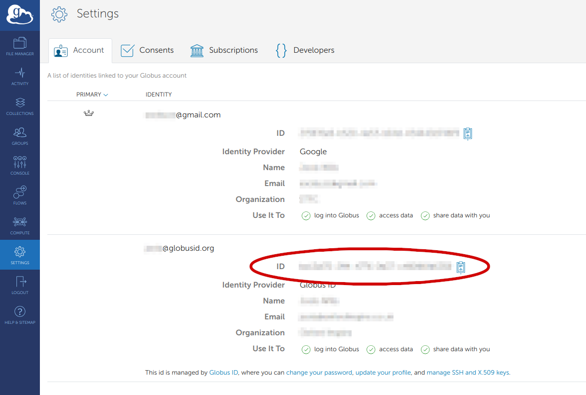
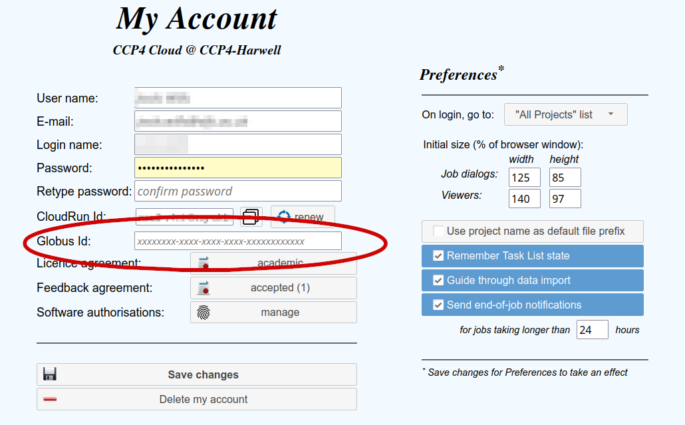
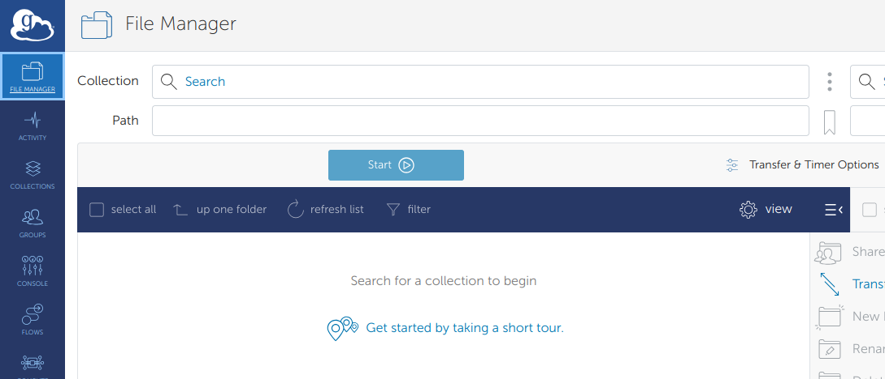
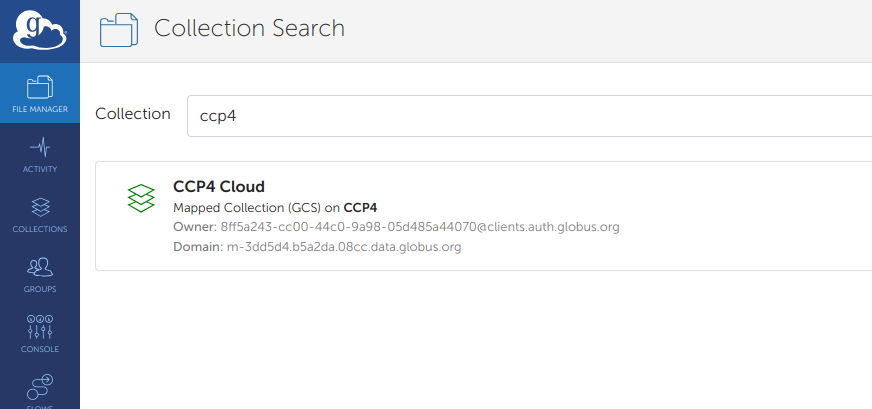
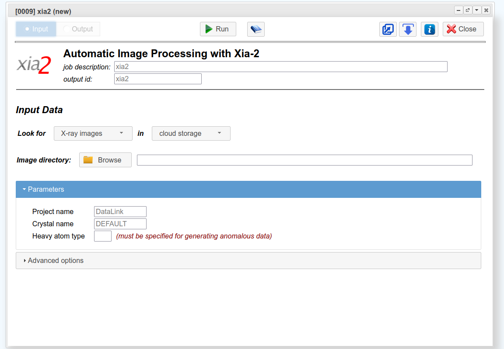
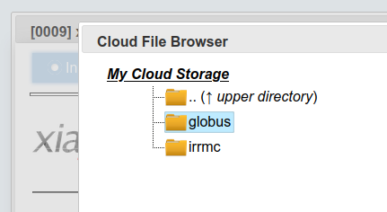
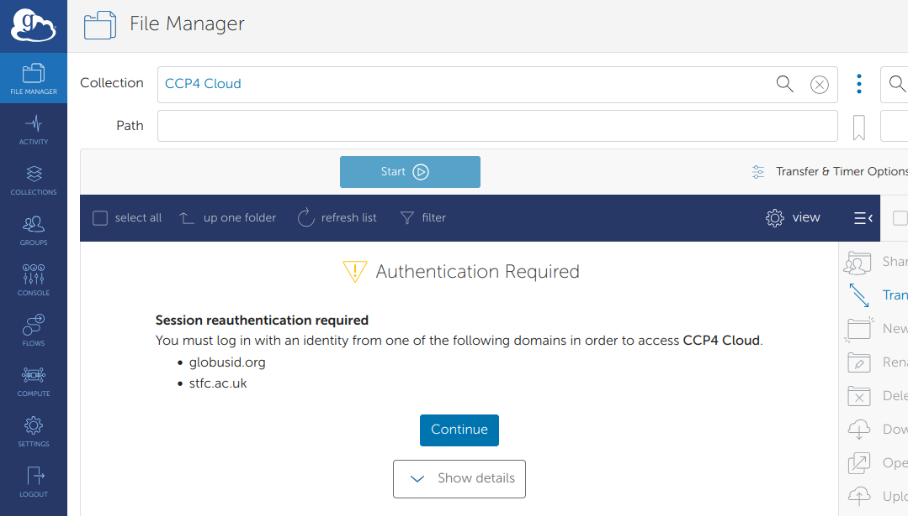
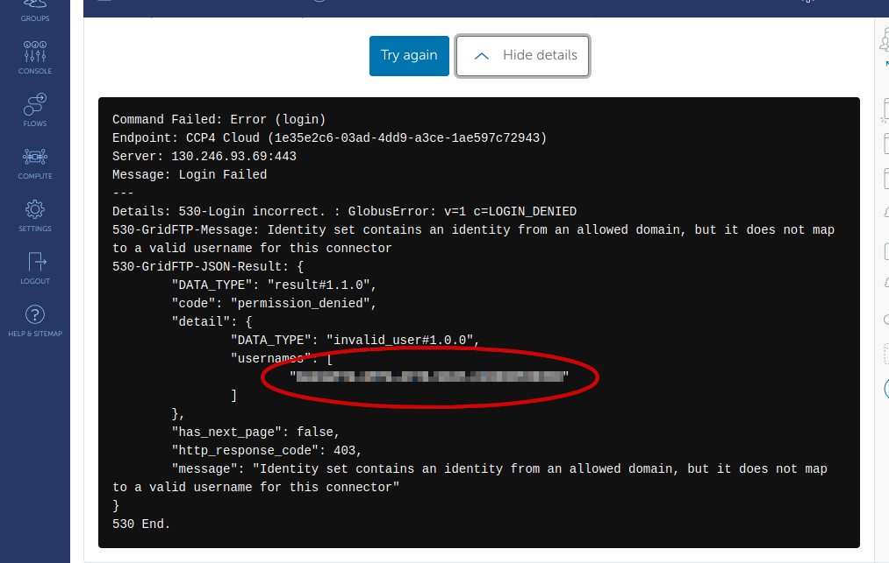

5. Transferring data to CCP4 Cloud via Globus¶
Globus is a system that allows the transfer of large amounts of data via a web based GUI. Many synchrotrons and other facilities make their data available via Globus. CCP4 Cloud has a Globus Endpoint allowing transfer of your data from experiments directly into CCP4 Cloud for processing.
Note: Data sent to CCP4 Cloud via Globus is stored temporarily. Please do not rely on this for permanent storage of data.
5.1. Authenticating with the CCP4 Cloud Globus Endpoint¶
To send data to CCP4 Cloud via Globus, you need to link your CCP4 Cloud account with a Globus ID.
To start, please navigate to https://app.globus.org and login/signup.
The CCP4 Cloud Globus Endpoint allows users to authenticate via an stfc.ac.uk or globusid.org account. If you have a Globus account with another login provider, you will be prompted to link either an stfc.ac.uk or globusid.org account when connecting to the CCP4 Cloud collection.
To link your CCP4 Cloud account to your Globus account, you will first need your Globus ID which can be retrieved from https://app.globus.org. Navigate on the left to Settings and you will see the identities linked to your Globus account. You need to copy the ID associated with either a globusid.org or stfc.ac.uk identity.
{kind=link}
This value needs to be added to your CCP4 Cloud account which is accessible from your My Account page on CCP4 Cloud as shown here:
{kind=link}
Once this is done go back to https://app.globus.org and choose File Manager. This is the main interface for transferring data between systems. You have two panes, which you can copy data between. The CCP4 Cloud collection is called “CCP4 Cloud”. You can click in the Collection box to bring up the search:
 {kind=link}
{kind=link}
5.2. Copying data to CCP4 Cloud via Globus¶
If for example you want to copy data from Diamond, you can search for the Diamond collection in one pane, and choose the CCP4 Cloud collection in the other. You can then browse to the data you want to copy, select it, and then click Start to transfer. More details on accessing data at Diamond with Globus can be found at https://www.diamond.ac.uk/Users/Experiment-at-Diamond/IT-User-Guide/Not-at-DLS/Retrieve-data/in40days/Globus.html
You can also use Globus to copy data from your local system to CCP4 Cloud. To do this you need to install Globus Connect Personal. This is available for Windows, Mac OS X and Linux. Installation instructions can be found here: https://www.globus.org/globus-connect-personal
5.3. Accessing data sent via Globus in CCP4 Cloud¶
Data transferred to CCP4 Cloud via Globus is available in CCP4 Cloud’s Cloud Storage.
This data is available for some tasks in CCP4 Cloud, such as Xia-2. To choose your data from the Xia-2 task, make sure you have Cloud Storage selected as follows:
{kind=link}
Then choose Browse. Your data sent by Globus is available in My Cloud Storage/globus
{kind=link}
5.4. Troubleshooting¶
Authentication Required:
Session reauthentication required
You must log in with an identity from one of the following domains in order to access CCP4 Cloud.
globusid.org
stfc.ac.uk
You will get this message if you do not have an stfc.ac.uk or globusid.org identity linked with your Globus account. In this case you can click Continue and then create a globusid.org account or associate an existing stfc/globus identity with your account.
{kind=link}
Authentication Required:
Identity set contains an identity from an allowed domain,
but it does not map to a valid username for this connector
If you get this, it likely means the wrong Globus ID has been used. You can view the details of the error and extract the ID Globus is sending and add that to your CCP4 Cloud user account.
{kind=link}